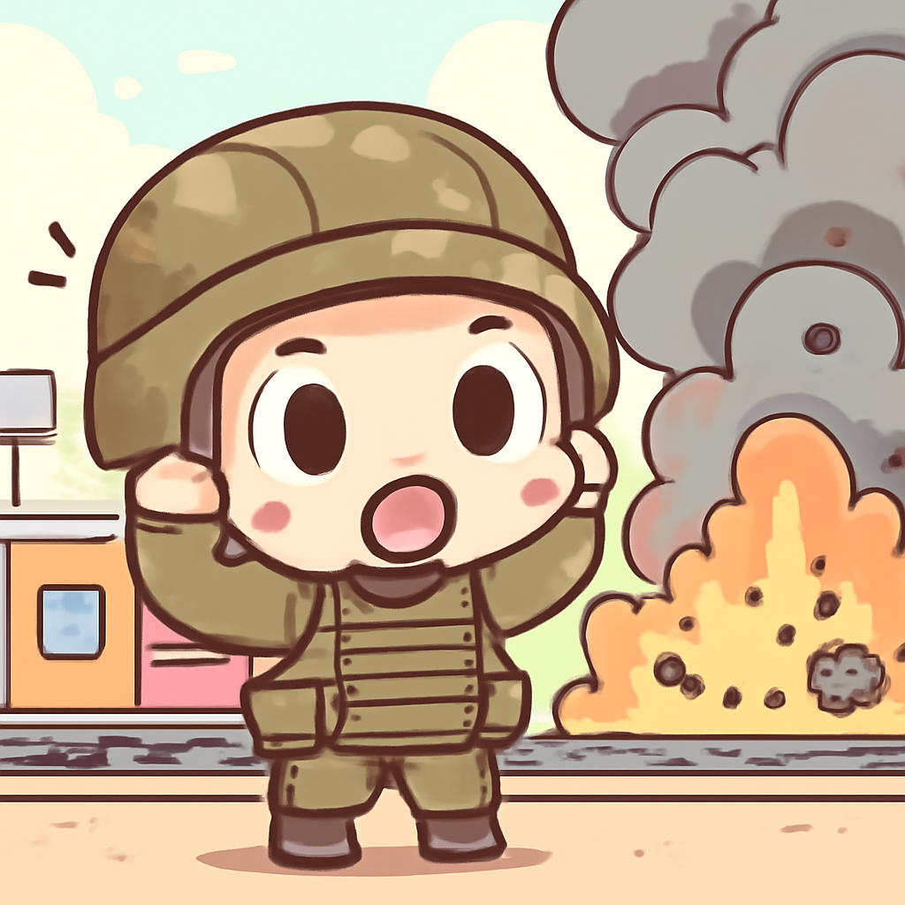

其一 · 烏克蘭基輔 · 俄羅斯攻擊火車站
俄羅斯在烏克蘭火車站發動攻擊，影響深遠。

今天在烏克蘭與波蘭邊界的火車站，俄羅斯對一列靜止的烏克蘭火車發動攻擊，剛好在英國前首相約翰遜和其他官員離開後不久。這一事件被視為對烏克蘭盟友的警告，可能會影響未來的國際支持。希望這不是普京的全新“開發”策略！
🔗 原始新聞 ↗
2026-09-15 · 以古觀今，以笑抗愁
俄羅斯在烏克蘭火車站發動攻擊，影響深遠。

今天在烏克蘭與波蘭邊界的火車站，俄羅斯對一列靜止的烏克蘭火車發動攻擊，剛好在英國前首相約翰遜和其他官員離開後不久。這一事件被視為對烏克蘭盟友的警告，可能會影響未來的國際支持。希望這不是普京的全新“開發”策略！
🔗 原始新聞 ↗
庫利亞坎民眾要求制止毒販暴力。
在墨西哥庫利亞坎，數千名民眾走上街頭，抗議當地毒販之間的暴力衝突已使社區陷入恐慌。隨著兩個大型犯罪集團的對抗，當地的暴力事件急劇上升，民眾的抗議也反映了對安全的渴望。或許大家都希望能回到沒有狗血劇情的生活。
🔗 原始新聞 ↗
沙烏地王儲尋求美國支持以應對胡塞攻擊。
沙烏地阿拉伯王儲穆罕默德·本·薩勒曼最近與美國軍方指揮官會面，表達對於胡塞武裝的攻擊感到擔憂，並請求美方提供更多的軍事支持。這次會議不僅影響沙烏地的安全局勢，也可能對全球油市造成影響，畢竟誰都不想在油價加劇的時候被迫選擇步行！
🔗 原始新聞 ↗
中國高層警告 AI 可能威脅黨的統治。
在中國，北京的高層警告，人工智慧的迅速發展可能對共產黨的統治造成威脅。這表明中國在AI領域的競爭壓力與日俱增，尤其是在面對國際對手的情況下。看來，AI不僅僅是未來科技的代表，還是政治鬥爭的潛在焦點！
🔗 原始新聞 ↗
南非尋找失踪跑者，結果發現多具屍體。
在南非，隨著失踪的跑者伊莉莎白·莫塞拉卡戈莫的屍體被找到，四具其他女性的屍體也被發現，令人心痛。這起事件引發全國的關注與調查，顯示出社會安全的嚴峻挑戰。希望未來的馬拉松能在更安全的環境中舉行！
🔗 原始新聞 ↗